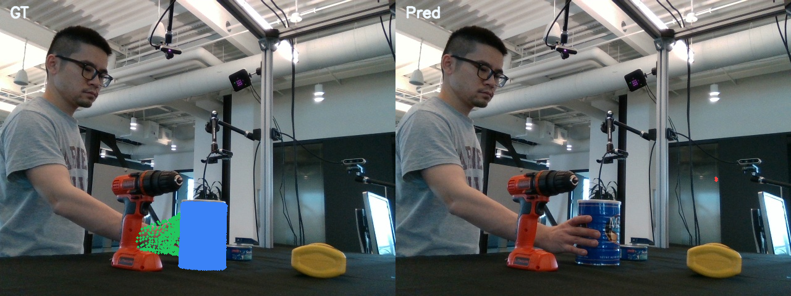
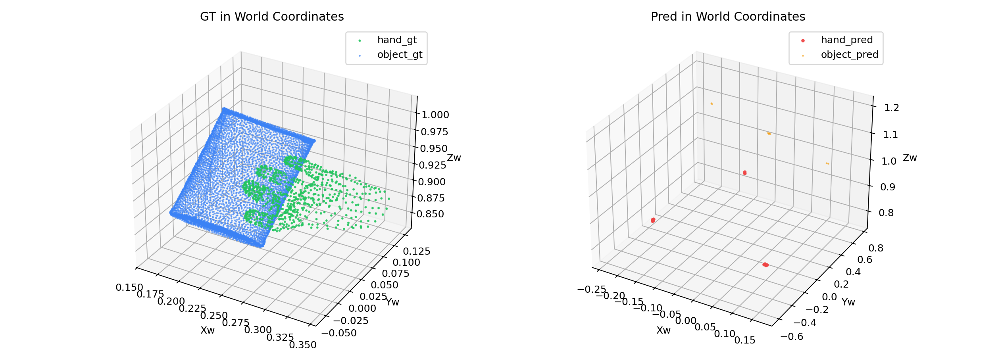

Overlay Compare
The repaired run now projects non-empty predictions. Hand has a small valid image footprint; object remains off-target.
This repair experiment targets the confirmed training loophole where empty meshes received zero geometry loss.
The objective now adds an explicit empty-mesh penalty and a sparse-field presence constraint. On frame
000030, the experiment no longer collapses to zero-vertex hand/object meshes by the end of the run.
objective_gap_step = nullobjective_gap_step = nullmixed_signmixed_sign
The previous empty-mesh collapse is no longer the dominant failure mode. Hand ends in
projection_path_non_empty. Object also stays non-empty, but its current diagnosis shifts to
camera_to_image_invalid, meaning the next blocker is now geometric placement / projection rather than
zero-geometry-loss collapse.

The repaired run now projects non-empty predictions. Hand has a small valid image footprint; object remains off-target.

Both hand and object survive as non-empty world-space meshes, which was not true before the loss-gap repair.